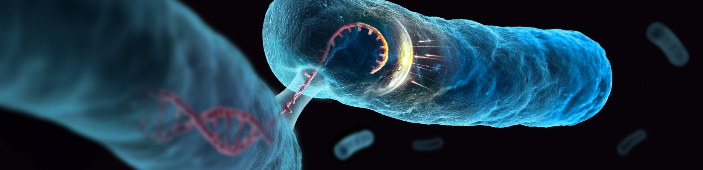
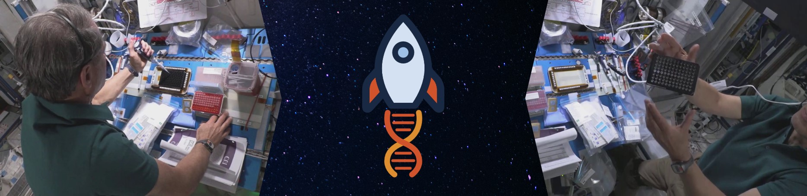

Our Research
We are dedicated to performing research at the forefront of computational microbiology, by employing cutting-edge methodologies to investigate the function of genes and proteins in microbes.
Here are some of the projects we are working on in the lab:

The Tactical Arsenal of Plasmids: Overcoming Host Defenses
Plasmids and other conjugative elements facilitate the horizontal transfer of genes encoding various functions, including antibiotic resistance and virulence factors. Yet, their establishment in a new bacterial host isn't straightforward due to potent host defense mechanisms such as CRISPR-Cas systems, SOS response genes, restriction enzymes, and other systems designed to target foreign DNA. So, how do plasmids manage to transfer to recipient bacteria with such efficiency?Our recent investigations have shed light on the countermeasures employed by conjugative elements. They possess a repertoire of anti-defense genes strategically positioned in their leading region, ensuring these genes are among the first to engage host defenses upon entry. These genes often cluster into distinct "islands," suggesting coordinated regulation and synergistic functionality. The outcomes of our research hold the potential to uncover novel anti-defense systems within the numerous uncharacterized gene families encoded in the leading region. Furthermore, our findings offer a clearer understanding of the dynamics underlying horizontal gene transfer. Recognizing these anti-defense strategies could play a pivotal role in mitigating the proliferation of antibiotic resistance and other adverse traits. Equally important, these insights could guide the engineering of mobile genetic elements for biotechnological use.
Further details can be found in our Nature paper: A diverse repertoire of anti-defense systems is encoded in the leading region of plasmids.
Also check out our review on gene expression in the leading region of plasmids: Strategies for zygotic gene expression during plasmid establishment.
"Reading" Microbial Genomes Using Natural Language Processing Approaches
One of our main interests is the integration of techniques adopted from natural language processing (NLP) to understand "gene syntax and semantics." In our initial work on the topic, we treated genes as words and genomic fragments as sentences. Leveraging NLP methodologies, we successfully predicted the function of previously uncharacterized genes with high accuracy. Stemming from this research, we introduced the GeNLP web server, a platform that explores the genomic contextual relationships of over 500,000 microbial protein families. We are now integrating transformer-based large language models, harnessing state-of-the-art NLP models to better understand different aspects of microbial systems through this novel lens.For more details about our approach, you are welcome to read our initial paper on the subject: Deciphering microbial gene function using natural language processing. Additionally, our GeNLP web server is available for exploring your gene families of interest (details in our GeNLP paper). Also check out our recent collaborative study with the Stern lab: Using big sequencing data to identify chronic SARS-Coronavirus-2 infections.
Finally, you are welcome to read our comprehensive review on NLP applications in genomics, transcriptomics, and proteomics , which covers the main language models, current limitations, and future directions in the field.
Uncovering Hidden Antimicrobial Resistance Genes Through Machine Learning
The growing threat of antibiotic resistance poses a significant health crisis and is predicted to cause millions of deaths across the globe if not properly mitigated. Therefore, it is highly important to devise methods for early detection of antimicrobial resistance genes (ARGs). Traditional methods for ARG detection rely heavily on sequence similarity searches against existing databases, inherently limiting their ability to identify novel resistance genes. To overcome this limitation, we developed DRAMMA, a machine learning model that leverages a variety of features, such as genomic and evolutionary contextual signals, to predict previously unknown ARGs that share no sequence similarity with known resistance genes.
CRISPR for Genetic Diagnostics on Earth and Beyond...
In close collaboration with Dr. Gur Pines from the Volcani Institute, we are harnessing new CRISPR-Cas systems for rapid and portable genetic diagnostics. CRISPR is a powerful tool for genetic engineering, but it can also serve diagnostic purposes. CRISPR-based detection assays exhibit high sensitivity and specificity, capable of identifying diverse genetic targets. They are also relatively easy to use, making them particularly suitable for applications in remote or resource-limited settings. Initially, we began by employing these assays for the detection of pests in agricultural produce to reduce spoilage and minimize pesticide usage. The next natural step for the project was to reach for the stars!Being so portable and easy to use, we thought CRISPR-based diagnostics would be a natural candidate for genetic diagnostics during space missions. Thanks to Eytan Stibbe and the Rakia mission, we recently had a chance to explore this onboard the International Space Station. In the first commercial flight of SpaceX, Eytan tested an isothermal amplification assay coupled with Cas12a activity in microgravity, and we showcased their potential to detect even tiny amounts of DNA in microgravity. Details can be found in our paper: "CRISPR-Based Genetic Diagnostics in Microgravity." We hope that CRISPR-based genetic diagnostics could serve for monitoring the crew's health, the spacecraft's surroundings, and potentially, the microbiome of plants cultivated in space farms.